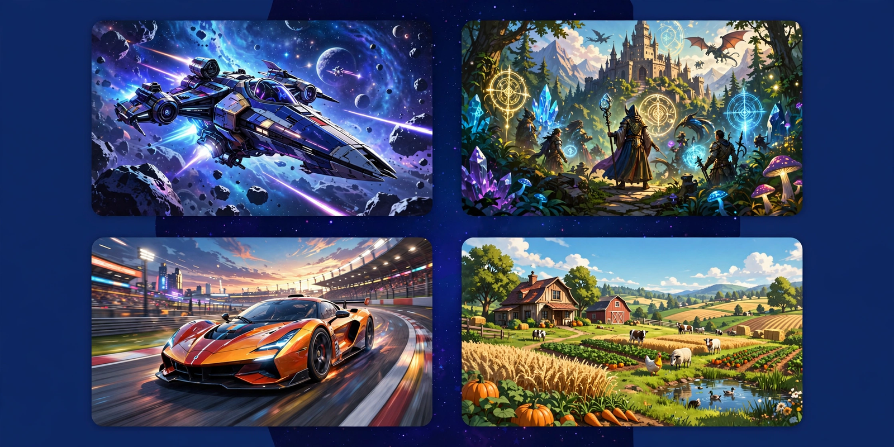

A library of game cover art tiles
Launched by Valve in 2003, Steam began as a way to deliver automatic updates for Valve's own games and grew into the largest digital distribution platform for PC gaming — with a store, cloud saves, achievements, user reviews, the Steam Workshop for mods, forums, broadcasting and Remote Play.
Install Steam
Statistics are approximate figures as commonly reported and remembered. See also the Steam charts page in this recreation.